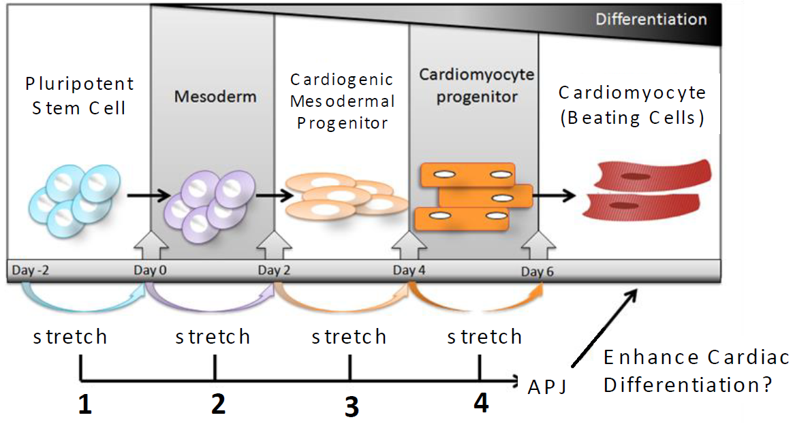
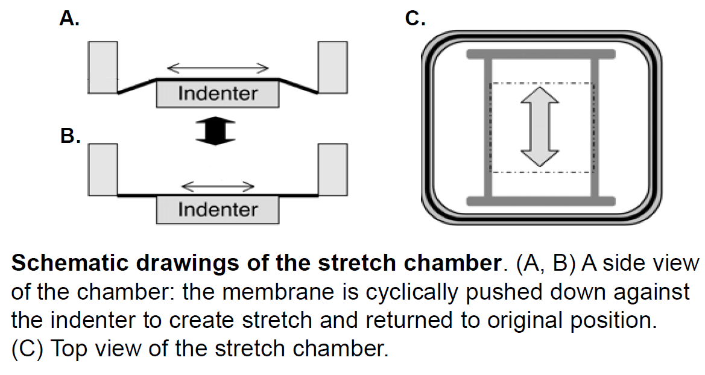

People Analytics


Worked at the intersection of stem-cell engineering, inflammation biology, and biomechanics to generate high-quality experimental datasets for understanding heart-cell development and early drivers of cardiovascular disease.
🔹 Research Objectives & Contributions
- Developed a silicone-based mechanical stretch platform to simulate the motion of a beating heart and study how physical forces influence stem-cell differentiation into cardiomyocytes, producing structured datasets linking mechanical stimulation with cell response.
- Led a funded research project demonstrating that microRNA-1 increases under mechanical stretch and may promote cardiac lineage commitment, highlighting mechanically driven gene-expression programs relevant for regenerative medicine.
- Applied traction force microscopy to quantify collective cell contractility by tracking bead displacement, generating quantitative force maps used to study tissue-level mechanics in early cardiac development.
- Modeled inflammatory signaling in atherosclerosis by measuring gene and protein markers in stem cells and macrophages exposed to lipid-rich environments, creating reproducible assays to evaluate immune–cell interactions during plaque formation.
- Integrated mechanical, molecular, and imaging readouts into multi-modal datasets to study how blood-flow disturbances around vessel branches contribute to inflammation and plaque initiation—an early computational framework for linking biomechanics with disease progression
⚡ Technical Highlights
- 🔥 Designed and executed multi-modal experimental pipelines combining mechanics, imaging, and molecular assays.
- 💻 Designed experiments simulating early atherosclerotic environments in vitro
- 📊 Molecular Measurement: Performed qPCR, Western Blot, and staining to track inflammation-related markers..
- Disease Modeling: Simulated early stages of atherosclerosis using lipid-treated cells
Leadership Highlights
- Designed and executed mechanical testing workflows.
- Performed imaging-based microstructural analysis of bone.
- Built data pipelines for multi-omic + mechanical datasets.
Skills
Experimental Design
Quantitative Imaging
Biomechanical Modeling
Stem Cell Culture
Wet Lab
Molecular Assays
Publications & Links
Awards
- 🏅NIH IMSD Scholar (Initiative for Maximizing Student Development)
- 🏅Chancellor's Research Excellence Scholar
- 🏅UC LEADS Scholar (did not accept this offer to pursue other opportunities)
- ABRCMS Travel Award
- MolES Travel Award
- Tau Beta Pi Engineering Honor Society
- NACME Scholarship (National Action Council for Minorities in Engineering )
- Butte Creek Foundation Scholarship